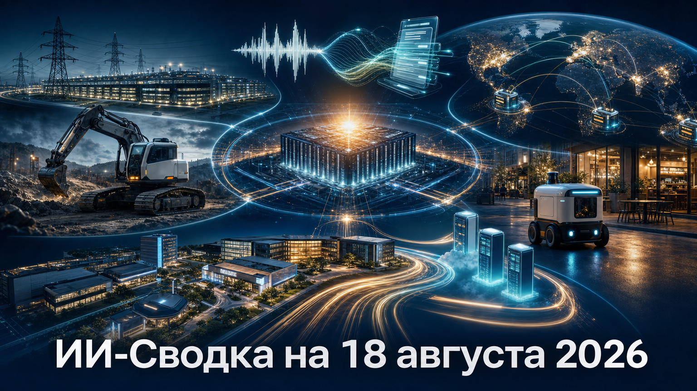

Новостей сегодня меньше, чем обычно
Повестка дня показывает, как ИИ-рынок всё сильнее связывает модели с физической инфраструктурой: энергией, площадками дата-центров, вычислительными кластерами и автономной техникой. Одновременно крупные раунды получают продукты, которые превращают речь и робототехнику в массовые рабочие интерфейсы.
Главный сигнал выпуска — капитал и партнёрства перемещаются от отдельных демонстраций к развертыванию: многогигаваттным ИИ-фабрикам, inference-облакам, строительной технике и городским сервисам доставки.
Nvidia инвестирует $1,5 млрд в SB Energy, которая развивает площадку PORTS-Pike в Портсмуте, штат Огайо, сообщает TechCrunch. OpenAI должна стать арендатором ИИ-фабрики, а Nvidia — единственным поставщиком вычислительной инфраструктуры для объекта.
Nvidia подтверждает партнёрство с SB Energy и первоначальную мощность проекта в 4,25 ГВт с возможностью расширения ещё на 3,75 ГВт. Финансовые параметры и кредитная поддержка раскрыты в сообщении TechCrunch, а не в официальном описании Nvidia; тем не менее сделка показывает, что поставщик ускорителей всё активнее участвует в финансировании площадок и энергоснабжения для ИИ-вычислений.
Швейцарская Gravis Robotics привлекла $200 млн в раунде Series A от SoftBank для международного расширения и развития инженерной команды, пишет Unite.AI. Компания разрабатывает аппаратно-программные комплексы, которые позволяют автоматизировать уже используемые экскаваторы и колёсные погрузчики.
Это крупный раунд для construction robotics, где основной экономический вопрос — не только создание нового робота, но и внедрение автономности в существующий парк тяжёлой техники. Данные о сумме, инвесторе и планах масштабирования изложены в отраслевом материале; независимая оценка фактической производительности систем и темпов коммерческого развертывания пока не приведена.
Wispr объявила о Series B на $280 млн при оценке $2 млрд; раунд возглавила Menlo Ventures, сообщает TechCrunch. Компания, известная продуктом Wispr Flow для ИИ-диктовки, одновременно представила речевую модель Canto и расширяет продукт в сторону заметок встреч и других голосовых интерфейсов.
Компания заявляет, что Canto должна снизить долю ошибок распознавания примерно с 30% до менее 10%, но это целевой показатель Wispr, а не независимый бенчмарк. Сочетание крупного раунда и модельного обновления показывает спрос на инструменты, которые делают голос полноценным способом ввода для заметок, переписки и рабочих процессов.
Groq закрыла Series A на $350 млн при оценке $3,5 млрд, пишет TechCrunch. Лидером раунда стала Disruptive, а Nvidia обозначена как планируемый участник; средства пойдут на развитие глобального inference-neocloud.
Groq заявляет, что уже располагает 13 дата-центрами в Северной Америке, Европе, на Ближнем Востоке и в Азиатско-Тихоокеанском регионе, а к 2027 году хочет увеличить мощность с 54 МВт до более чем 200 МВт. Эти операционные показатели и планы исходят от самой компании, но стратегический поворот заметен: производитель ИИ-чипов делает ставку на эксплуатацию распределённой вычислительной инфраструктуры.
Serve Robotics договорилась с Grubhub о запуске доставки тротуарными роботами в Чикаго, Лос-Анджелесе и Александрии, штат Виргиния, сообщает Unite.AI. На старте к сервису должны подключиться более 100 ресторанов в Чикаго и почти 200 в Лос-Анджелесе.
Для Serve это новый канал через крупный маркетплейс доставки наряду с уже существующими связями с DoorDash и Uber Eats. Материал основан на корпоративном объявлении, поэтому заявленные география и число заведений требуют дальнейшего подтверждения по мере запуска; однако партнёрство показывает переход роботодоставки от отдельных пилотов к интеграции в привычные потребительские сервисы.
Alibaba согласилась продать игровую студию Lingxi Games фонду Trustar Capital, сообщает Tom's Hardware. По данным Reuters, на которые ссылается публикация, стоимость сделки превышает $2 млрд; другие сообщения оценивали актив как минимум в $1,5 млрд.
Продажа означает выход Alibaba из собственной разработки игр и высвобождает ресурсы для облачной и ИИ-инфраструктуры. Условия, точная цена, срок закрытия и регуляторные согласования публично не раскрыты, поэтому сделку следует рассматривать как стратегический сигнал о перераспределении капитала, а не как окончательно закрытую финансовую операцию.